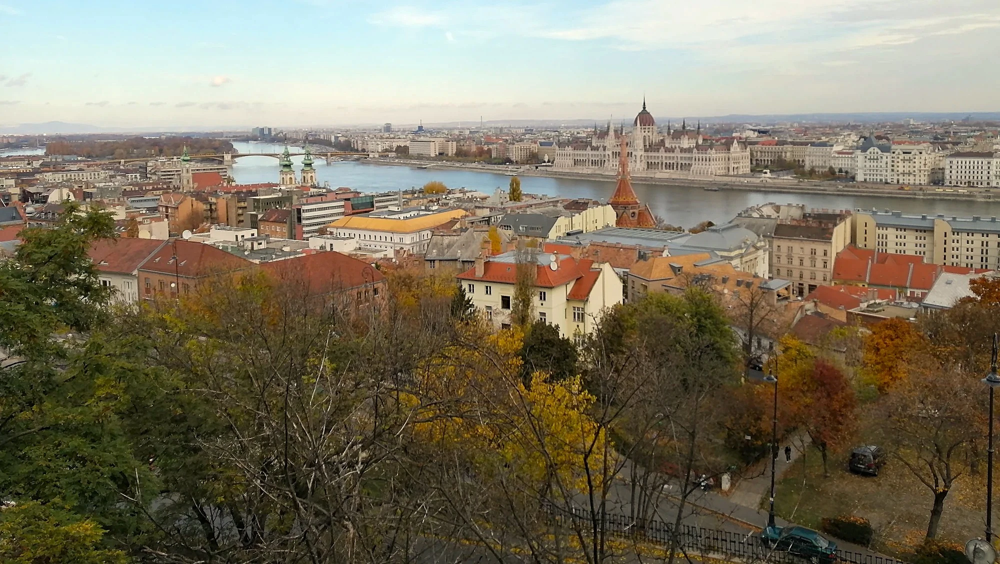
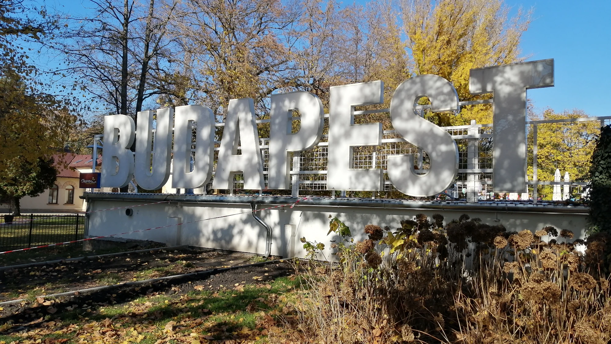
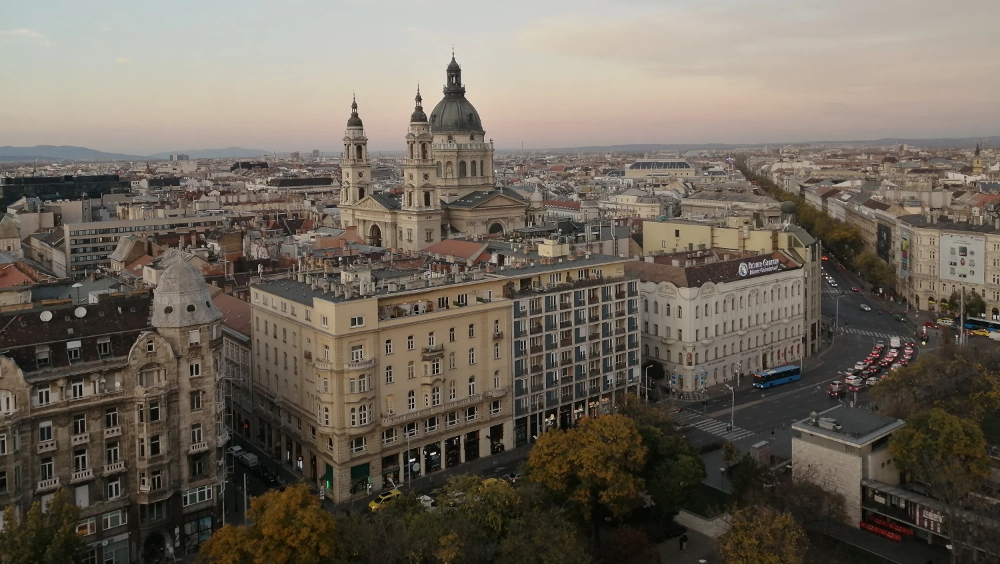
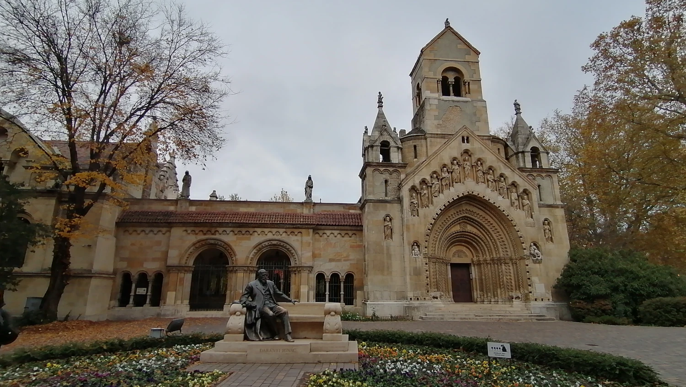
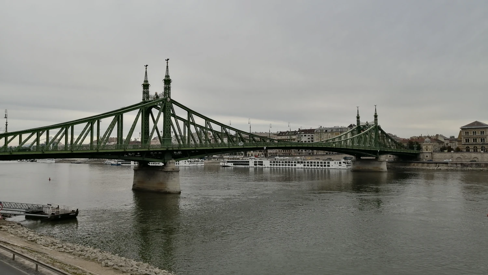
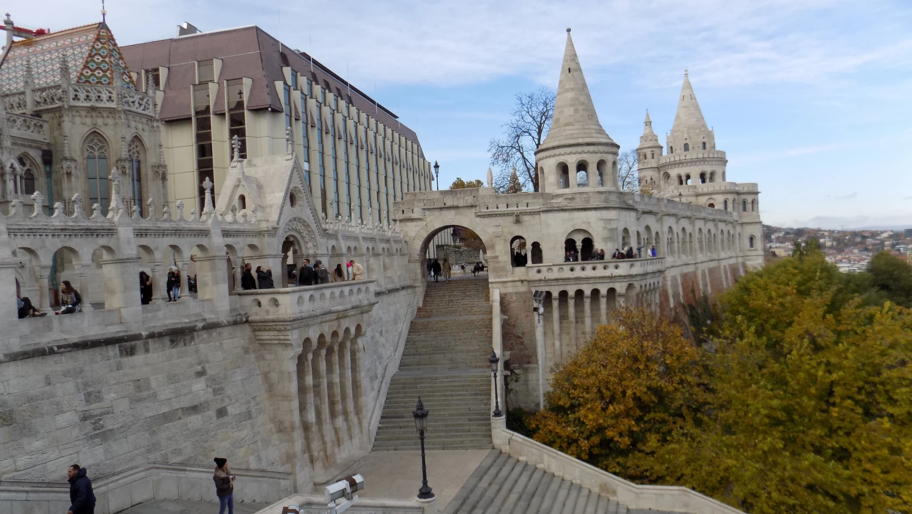
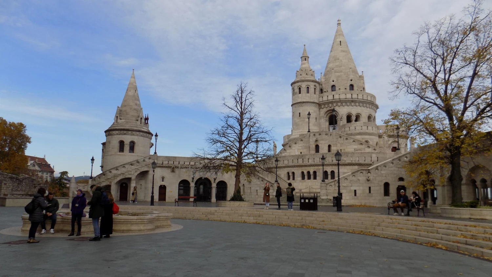
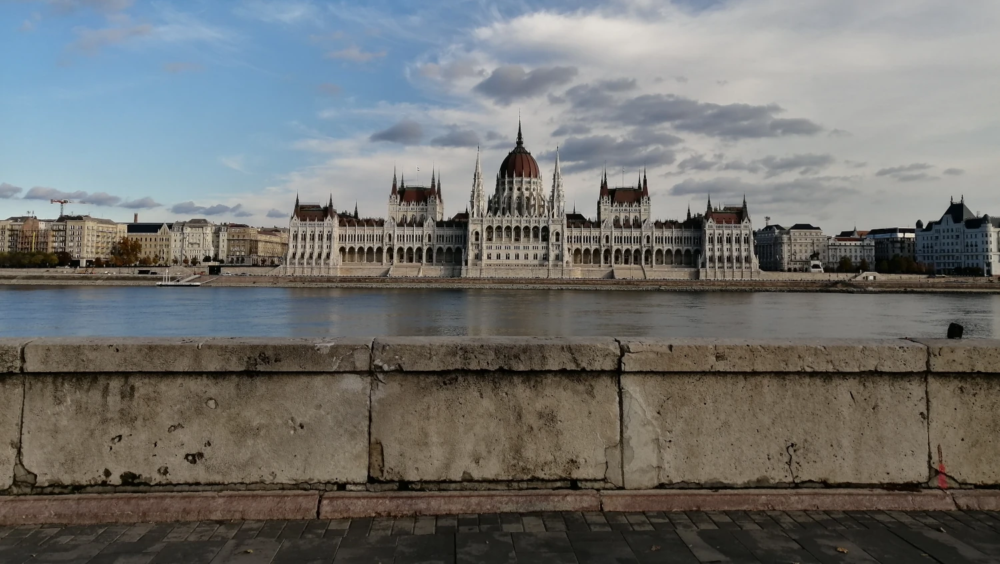
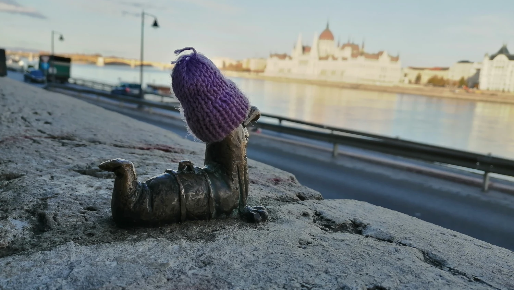

Město, které tě okouzlí
Budapešť

Tentokrát jsme se vydaly do hlavního města Maďarska – Budapešti. Do tak velkého města jsme nechtěly jet autem, takže jsme zvolily pohodlnou cestu vlakem. Ubytované jsme byly přes Airbnb přímo v centru, hned naproti Bazilice svatého Štěpána, což byla ideální výchozí poloha pro objevování města.
Prošly jsme snad celé centrum, navštívily nejstarší linku metra M1 a zastavily se také na Náměstí hrdinů (Hősök tere) u parku Városliget, odkud se dá vyrazit na krásnou procházku plnou zajímavých míst.
Nezapomněly jsme ani na druhou část města – Budín (Buda), odkud jsou nádherné výhledy na Pešť a Dunaj. I když byla spousta památek zrovna pod lešením, podzimní atmosféra jim dodávala své kouzlo a celý zážitek byl i tak nezapomenutelný.
Velmi doporučujeme také Markétin ostrov, ideální místo na odpočinek a procházky. A kdybychom měly vyjmenovat všechno, co je v Budapešti k vidění, jedna stránka by rozhodně nestačila. Zaujaly nás i drobné bronzové sošky rozeseté po městě, například známá socha Columba s mrtvou žábou se zbraní.
Budapešť je město, kde je neustále co objevovat a kam se člověk rád vrací.
Pokud si chcete z cest přivézt nějaký hezký suvenýr, určitě sáhněte po maďarské paprice. Nabídka je obrovská a někdy není úplně snadné se vyznat, která je jemná, pálivá nebo opravdu hodně ostrá. Maďaři si na paprice dávají záležet a používají ji téměř do všeho. Kromě mleté papriky stojí za vyzkoušení také paprikové pasty, které se skvěle hodí třeba do guláše. Nebo je libo maďarská klobása? Výběr je opravdu široký, takže si tu každý najde přesně tu chuť, která mu vyhovuje.
Mezi Buda a Pešť

Budapešť je hlavní město Maďarska a žije v ní přibližně 1,7 milionu obyvatel, což z ní dělá jedno z největších měst střední Evropy. Leží na obou březích řeky Dunaj, který město rozděluje na historickou Budu a rušnější Pešť. Mezi největší památky patří maďarský Parlament, Řetězový most, Budínský hrad, Rybářská bašta a Matyášův chrám, odkud jsou jedny z nejkrásnějších výhledů na celé město. Budapešť je také proslulá svými termálními lázněmi, například Széchenyiho nebo Gellértovými, které patří k největším v Evropě.
Místní kuchyně je výrazná a sytá – typický je guláš, paprikáš, langoš, töltött káposzta (plněné zelí) nebo sladký kürtőskalács. K oblíbeným nápojům patří tokajské víno, pálinka a silná maďarská káva. Město má živou kavárenskou a barovou scénu, známé jsou hlavně ruin bary v židovské čtvrti. Budapešť nabízí ideální kombinaci historie, gastronomie, relaxu v lázních a pulzujícího nočního života, díky čemuž je oblíbeným cílem turistů z celého světa.
Galerie






